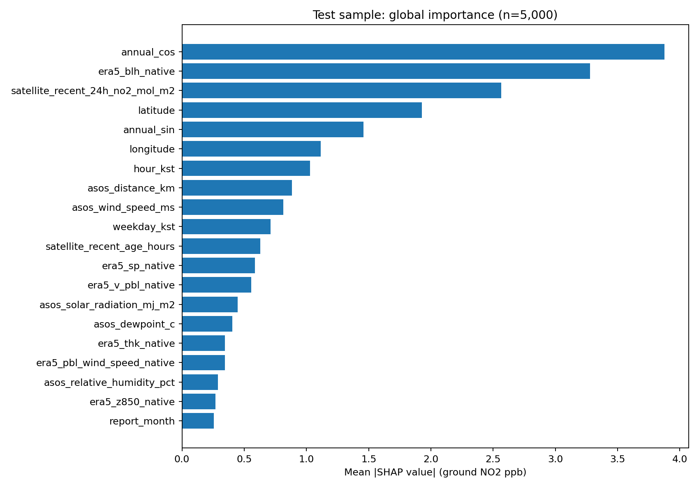
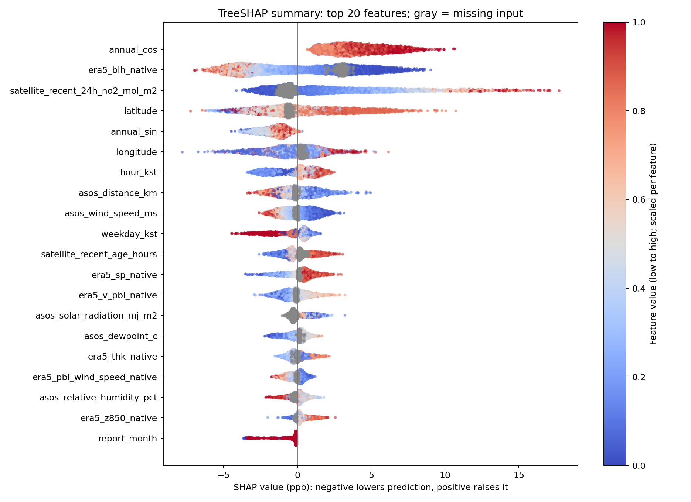
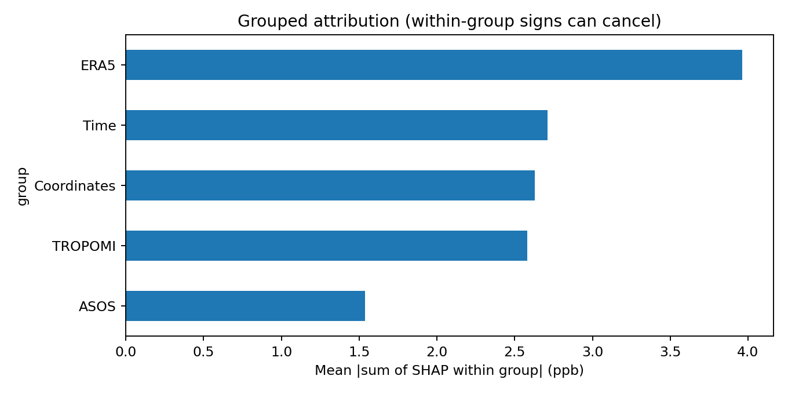
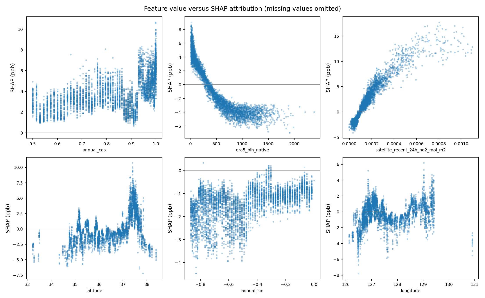
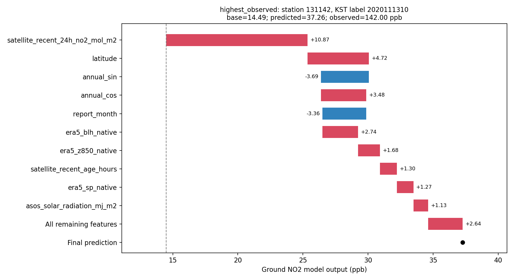
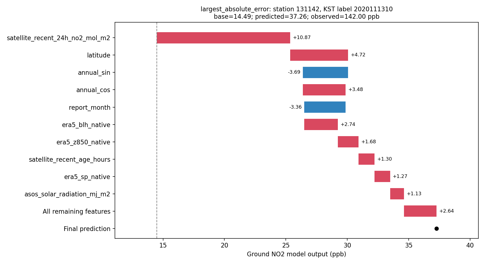
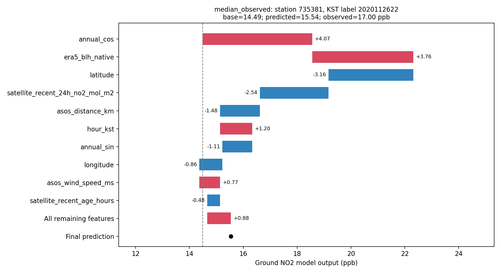

2020년 11–12월 실측 평가 관측 652,496개 중 균등 무작위 5,000개(seed=42)를 분석했습니다. 특수 사례 3종은 설명용으로 추가하며 전체 중요도 계산에는 추가 사례를 포함하지 않았습니다. 실제 계산 관측은 5,002개입니다.
LightGBM 내장 TreeSHAP(pred_contrib=True), 학습 트리의 경로·커버를 기준으로 계산했습니다. 별도의 interventional 배경표본을 사용하지 않았습니다. 모델을 재학습하지 않았습니다.
기여도 단위는 지상 NO₂ ppb입니다. 기준값 + 각 변수 SHAP 합 = 예측값이며 최대 오차는 3.27e-13 ppb로 검증했습니다. 기준값은 14.490 ppb입니다.
11–12월 표본에서는 연중 주기(cos), ERA5 경계층 높이, 최근 24시간 위성 NO₂가 상위입니다. 겨울철 표본에서의 기여이며 연중 전체의 중요도 순위로 일반화하지 않습니다.
| 순위 | 변수 | 평균 절대 SHAP (ppb) |
|---|---|---|
| 1 | annual_cos | 3.876 |
| 2 | era5_blh_native | 3.279 |
| 3 | satellite_recent_24h_no2_mol_m2 | 2.565 |
| 4 | latitude | 1.928 |
| 5 | annual_sin | 1.458 |
| 6 | longitude | 1.115 |
| 7 | hour_kst | 1.030 |
| 8 | asos_distance_km | 0.882 |
| 9 | asos_wind_speed_ms | 0.814 |
| 10 | weekday_kst | 0.712 |
절대값은 예측 기여의 크기이며 양/음 방향을 뜻하지 않습니다. 아래 요약도에서 오른쪽은 예측 증가, 왼쪽은 감소입니다. 빨강은 해당 변수의 높은 값, 파랑은 낮은 값, 회색은 결측입니다.



자료군별 값은 관측마다 해당 군 SHAP를 더한 후 절대값 평균을 취했습니다. 개별 변수 평균 절대값 합과 다르며 같은 군 내 양/음 기여가 상쇄될 수 있습니다.

연관성을 보여 주는 모델 설명이며 인과효과가 아닙니다. 시간 sin/cos, 기온/이슬점, 기압, 풍속 등 상관된 변수 사이에서 기여도가 나뉠 수 있습니다. 이 분석은 자료군을 제외해 재학습하는 ablation 실험이 아닙니다.



기존 좌표·시간 연결과 위성 노드/hour-bin 대용 연결의 한계는 그대로 적용됩니다. 이는 평가기간 표본의 설명이며 전체 기간·공간에 대한 중요도 순위를 보장하지 않습니다.